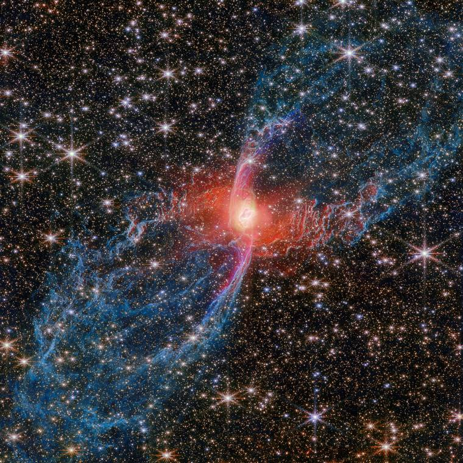

The Ic² Research Institute develops the COSMIC Framework, a proposal that information is the physical layer beneath quantum mechanics, gravity and thermodynamics. Every prediction is dated before its data arrives, and every result joins the public record.
Who We Are
The book and the Institute chase the same thing: clarity. Not the comfortable kind. Quantum mechanics made the world stranger, not simpler, and every honest step since has gone the same way. Whatever lies far below the Planck length is almost certainly stranger still.
So the clarity worth having is clarity of method: sharper questions, faster revision, and no answer defended one step past its evidence. It will not make the universe comfortable. It makes us better at standing in front of it.
Whoever the first human was, wherever they stood, one of the first questions was probably, “Where am I?”
Question.Quest‑ion.
Finding out was version one. We have been revising the answer ever since. Maybe that is what being human is: not the answer, but the asking.
The framework is in its sixth edition. What will the tenth look like?
Since September 2026, every new prediction is registered in a dated public archive before its result arrives, and every result is published.
Our Name: Ic²
I
Information
The raw material. The framework proposes that matter and energy are patterns of information, not the other way around, so every physical event is information being processed.
c
Consciousness
Information that models itself: a system able to represent its own states. Not a visitor to the physical world, but one of its patterns.
c²
Computation
How information changes. The laws of physics can be read as the rules of an update, applied at every point, at every moment.
Our Logo: The Spinner
Behind it: the Red Spider Nebula. ESA/Webb, NASA & CSA, J. H. Kast
Three arms, one form. Each arm carries one of the three things the framework studies, and none can be taken away without the shape falling apart. Beside it is Metatron's Cube, the full geometry of circles and triangles the Spinner is cut from. Why these three colors, and why they belong together, is the story of About Our Colors below.
Blue: Information
Blue carries Information, in the same navy as the Ic² wordmark, whose I stands for it. The framework's first claim is that information is not a description of reality but its substance: not information about the world, but what the world is at its most basic level. Einstein showed that mass and energy are one thing in two forms. The framework proposes that both are, in turn, patterns of information, which would explain why the same mathematics keeps turning up from quantum mechanics to cosmology.
Green: Computation
Green carries Computation: the way information changes from one moment to the next. Reality does not sit still; it updates. Quantum mechanics already works this way. To find the path a particle takes, nature weighs every possible route, and the one we see is where those contributions reinforce. Thermodynamics carries every isolated system toward its most probable state. Read together, the laws of physics look less like a list of facts and more like the rules of a process that never stops running.
Red: Consciousness
Red carries Consciousness, the c in Ic²: information that models itself, a system able to represent and revise its own states. On this view, the mind is not a visitor to the physical world. It is one of its patterns, made of the same fields as everything else.
When information becomes complex enough to represent its own processing, awareness appears. Nothing mystical is required. Thought, emotion and attention would be patterns in physics, not exceptions to it.
The framework follows that idea further. If emotions are information patterns in physical fields, some could outlast the moment: lingering in a place after people leave, showing up in careful measurements, strengthening when a group shares them, fading with time. Old phrases like “sacred space” and “the atmosphere of a room” may be describing something real. None of this is established. It is where the framework points, and every part of it can be tested.
If it holds, the stakes are human as well as technical. How we treat one another would leave a physical trace, and so would harm. The mind-body problem would dissolve, because mind and body would be one set of patterns seen from two sides. And the old sense that beauty, goodness and truth belong together would have a physical reason: all three would track the coherence of information.
The Triangle: Three That Stand Together
Information without computation never changes. Computation without awareness never knows what it has done. Awareness without information has nothing to be aware of. Each needs the other two, so the Spinner draws them as one closed form.
Physics has been learning the same lesson for a century: properties live in relationships, not in things. A quark has no color of its own. Two entangled particles share one state rather than holding two. The triangle is that idea drawn in three strokes.
The Open Center: Room for What Emerges
Where the three arms meet, the Spinner leaves a gap. It is deliberate: unfinished, not empty.
Emergence. Put information, computation and awareness together and you get more than the three: experience from process, meaning from pattern, novelty from lawful change. The open center is where that surplus lives.
The strange loop. A mind watching itself never quite closes the circle. Douglas Hofstadter called this the strange loop at the heart of consciousness. The center stays open because self-reference always leaves something over.
Incompleteness. Gödel proved that any consistent system rich enough for arithmetic holds truths it cannot prove from within. A theory of everything, written from inside everything, should expect the same. The open center is the framework saying, in its own logo, that it will never be the last word.
The Motion: Nothing Here Stands Still
The Spinner turns because reality does. Fields fluctuate, particles transform, entropy climbs, galaxies rotate, awareness flows. Even what looks permanent is a pattern held steady by constant change, like a whirlpool that keeps its shape while every drop of water in it moves on.
The turning is also how the work proceeds. Each revolution brings us back to the same questions at a deeper level. That is not going in circles. It is how understanding deepens.
E = Ic²: In Conversation with Einstein
The resemblance is deliberate. E = mc² showed that mass and energy are one thing in two forms. E = Ic² proposes a step beneath it: that energy arises from Information (I), shaped by Consciousness (c) and Computation (²).
It would not replace Einstein's equation; it would contain it. If the framework is right, mass-energy equivalence is one special case of how information, awareness and computation interact.
Nor is it only a symbol. The framework makes specific, dated predictions across cosmology, quantum physics and consciousness research, and publishes each one before its data arrives.
Three parts that cannot be pulled apart, one whole, always in motion: the Spinner is our research program in a single shape. It is a picture of what we study, and our best guess at how reality is put together.
About Our Colors
Every color pair on this site comes from Quantum Chromodynamics, the physics that holds atomic nuclei together. We chose them for the same reason nature uses them: they combine into something stable.
Quarks carry one of three color charges, red, green or blue, and antiquarks carry the anticolors: cyan, magenta and yellow. Gluons, which carry the strong force, each carry a color and an anticolor. No one has ever seen a quark's color, and no one will: quarks exist only in colorless combinations, and color is defined entirely by how quarks interact. A quark has no color on its own. The property lives in the relationship, the pattern Element 1 of the book finds throughout physics. The names are borrowed from light because the arithmetic matches: three colors combine to neutral, the way red, green and blue light combine to white. The match is mathematical. Quark color has nothing to do with the colors we see.
The same arrangement turns up somewhere very different. The Vera C. Rubin Observatory photographs the sky through six filters, from ultraviolet to near-infrared. To make a color image, astronomers choose three and assign them to red, green and blue. Three channels combine to neutral, and each color cancels against its opposite. Physicists borrowed color for quarks because this structure was already familiar; astronomers use it because human eyes work that way. Two fields, one arrangement, because the arrangement works.
Quark color charge. Three charges, and only the combination that sums to colorless exists freely. The names are symbolic: quarks are far too small to interact with visible light.
LSST passbands. Six real wavelength bins running from near-ultraviolet to near-infrared. Two of the six are invisible to the eye, so any color image is three of them chosen and assigned to red, green and blue.
R + G + B → one mark
The Spinner. The three color charges and nothing else. Together they are colorless, like the three quarks inside a proton: three distinctions resolving into one.
Two unrelated fields and our own mark, one structure. Neither of the first two diagrams shows a color anything actually has; each assigns three channels that sum to neutral, because that is what makes the combination readable. The Spinner is the third example, and the rest of this site’s palette grows from it.
That is why every card, accordion and panel on this site is built from one of these pairs: a quark color for the body and its anticolor for the edge. Each pair sums to neutral, so each panel reads as one stable unit. The Rubin Observatory is also among the instruments expected to test the framework's predictions, so the instrument, the physics it measures and the site that reports on it all run on the same additive logic. Nobody planned that. It is what happens when one good solution turns up in three places.
The Spinner sits at the top of this system, and it reaches colorless by the other route nature allows. A meson pairs one color with its anticolor; a baryon, such as the proton, combines all three colors. Every panel on this site is a meson. The Spinner is the baryon, and the only place the three colors appear together.
A Coincidence Worth Enjoying: 3, 6, 9
On the color wheel your screen uses, pure red, green and blue, the primaries the Spinner's three colors are named for, sit exactly 120 degrees apart: green at 120, blue at 240, red at 360. Add the digits of each and you get 3, 6 and 9. That part is pure coincidence. Hue angles are a convention of how displays describe color, and nothing in physics depends on them.
The coincidence lands in good company, though. The equal spacing is real physics: in the mathematics of the strong force, the three color charges sit at the corners of an equilateral triangle, 120 degrees apart. And the counting is real too: 3 color charges; 6 once the anticolors are included; 9 color-anticolor combinations, which sort into the 8 gluons and 1 colorless state. The digit sums are luck. The 3, 6, 9 of the strong force is not. We like that they rhyme.
Here is what makes quark color more than a naming scheme, and it is the heart of Element 4. There are eight kinds of gluon, one for each of the eight generators of the SU(3) symmetry behind the strong force, and each one rotates a quark's color state in a three-dimensional complex space. Together they form a complete set of operations: any change of color can be built from them. Read as computation, quarks are qutrits, units with three states instead of a qubit's two; gluons are the gates; and the proton is the stable output. The color labels are not decoration. They name the dimensions of the space where that computation runs.
Nine QCD pairs in use on this site
R + Cy#8B0000 / #00838f
G + Mg#1a5c2a / #b01558
B + Yw#005ba5 / #f1e303
Cy + R#005f6e / #c62828
Mg + G#8e0c45 / #1a7a36
Yw + B#7a5000 / #1565c0
R + Cy bright#c62828 / #00bcd4
Cy + R bright#00838f / #e53935
G + Mg bright#2e7d32 / #e91e63
Each card, accordion and panel uses one pair: the quark color as the body, its anticolor as the edge. Source: Element 4, A Quest for The Big TOE.
Terzan 5. Two telescopes, one picture. Webb records infrared, Hubble records visible light, and the whites, blues and reds here are those separate bands assigned to the three channels a screen can display.
NASA, ESA, CSA, STScI, G. Zullo

The Red Spider Nebula. Every color in this image is infrared. Webb’s NIRCam records wavelengths no eye can detect, so the red and the blue were chosen to hold them apart. They were not observed.
ESA/Webb, NASA & CSA, J. H. Kast
NGC 1300. ESO describes this one plainly: green, red and infrared filters combined. Two of the three are colors. The third is a decision.
ESO/PHANGS
None of these is a photograph in the ordinary sense. Each is a set of measured wavelength bands assigned to red, green and blue so that a human visual system can read them, and the assignment is a choice made by the people who processed the data. These come from Webb and the Very Large Telescope rather than from Rubin, but the decision is the same one, and it is the same decision the palette on this site makes.
target Our Mission
▼
Open, transparent research into the fundamental nature of reality. No paywalls. No gatekeeping. Nothing held back. All findings are freely available and every prediction is on the public record before the data arrives.
The Ic² Research Institute investigates what reality is made of, through information theory, consciousness research and computation. Its main work is the COSMIC Framework, whose predictions are decided by independent experiments run by people with no stake in the result.
Open collaboration and open data are not aspirations here; they are working rules. New predictions are registered in public before their results arrive. Every revision is logged, including the September 2026 correction of earlier priority claims, and the record is never quietly edited.
explore The Quest
▼
The Quest documents, in public, the life of a theory from its inception: every submission, review, test and revision along the way.
Most people only see the end of a scientific idea: the headline when it is confirmed, or nothing at all when it is not. The years in between, where an idea is submitted, questioned, funded or turned away, happen out of sight. The COSMIC Framework is going through that process now, and the institute records it as it happens: each route tried, what it asked for, how long it took, what it cost and what came back.
A theory can reach the world by more than one road, and the Quest follows each of them:
Academia: journals, peer review, preprint servers, conferences and work with university researchers.
Government programs: research grants, national laboratories, and proposals for time on public telescopes and data archives.
Business: industry partners, private funding, patents and products built on the research.
Independent: researchers with no institution behind them, public data, citizen science and the open routes any person can use.
Every result adds to what is known, and the Quest counts what was learned.
The Quest stays tied to the work. It follows the framework's own tests, submissions and applications rather than commenting on science in general, so that anyone can watch how science works from the inside. The rules it follows are set out in the Open Science Policy.
See where the framework stands today on the Quest Map, and follow the Quest as a video series on YouTube, with a written companion on this site for every episode.
check_circle Core Values
▼
Six operating principles, not aspirational statements. Since September 2026 they are also institute policy, set out in the Open Science Policy. Every one is either demonstrated by the public record or it is not. The record is public so anyone can check.
Open Science
All data, hypotheses, results and revisions are public.
Radical Transparency
Predictions are documented and dated before results arrive. Every revision is logged. The scientific record is never silently amended.
Community-Driven
Contributions are evaluated on merit and insight. Institutional affiliation is not a prerequisite. Contributors retain ownership of their work.
Testable Predictions
Every theoretical claim must be falsifiable through observable prediction. Assertions without falsification criteria are not accepted into the framework.
Intellectual Honesty
Limitations are stated clearly. All outcomes are reported. Red results are not suppressed. A falsified prediction is data, reported as fully as any other.
No Gatekeeping
Knowledge belongs to everyone. Review happens in the open, nothing published sits behind a paywall, and no affiliation is needed to take part.
diversity_3 The Team
▼
An independent research institute, built and run by its community. Membership is open, and the work itself is the only standard.
Founder and Principal Researcher: Michael K. Baines. Aerospace engineer, independent researcher and author, based in Bangkok. ORCID: 0009-0001-8084-3870. Author of A Quest for The Big TOE, the primary published output of the COSMIC Framework. His engineering career began in refrigeration systems and moved into aircraft refrigeration and then other aircraft systems. He was a flight test structural engineer at Mitsubishi, working on certification testing for what would have been the company's first in-house regional aircraft; worked on business jets for Dassault Falcon Jet, Gulfstream in Savannah, Georgia, and Bombardier's Global 6000 and 7000, as well as Bombardier's C Series program in Montreal; taught engineering systems at Boeing; and worked with Jacobs Engineering Group. The methods stay the same from one field to the next; only the application changes.
The Institute operates without traditional hierarchy to encourage interdisciplinary exploration. Contributors from any background are welcome. Contributions are evaluated on merit. Every contributor retains full ownership of their work and receives attribution in the public record.
A short overview of the idea behind the institute: information as the physical layer beneath quantum mechanics, gravity and thermodynamics, and the predictions that put it to the test.